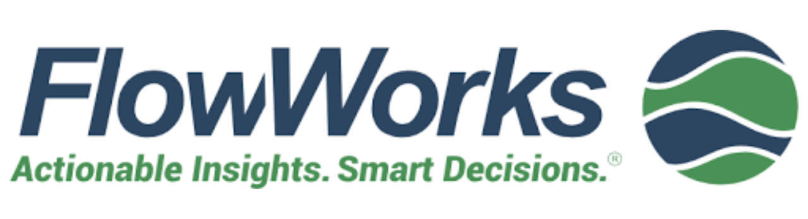
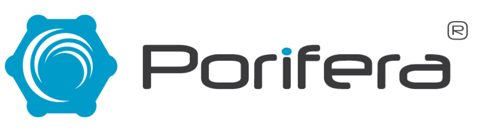
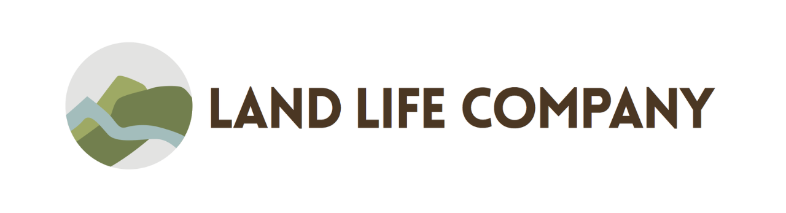
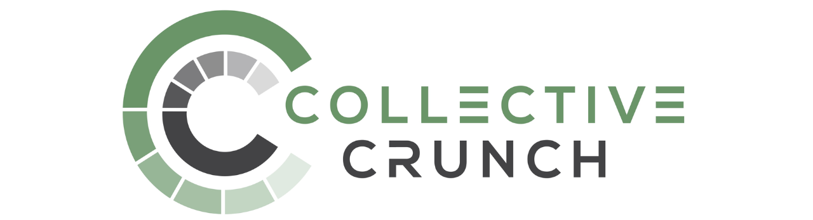
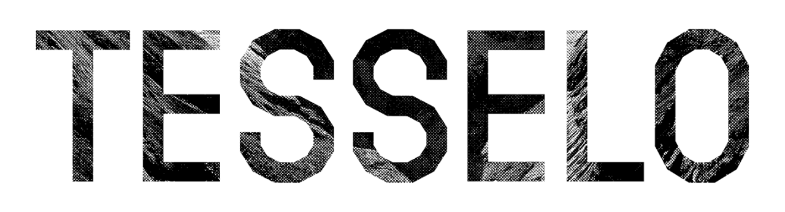
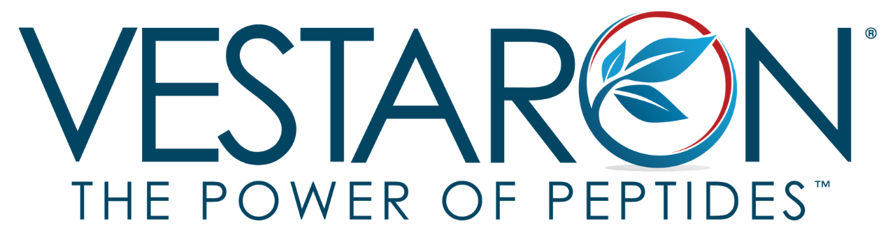
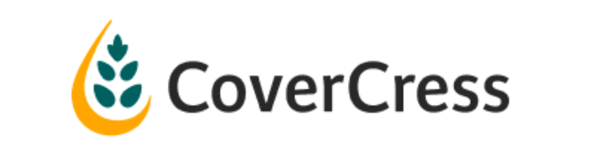

Satelligence
Utrecht, Netherlands
Satelligence helps businesses address deforestation and fulfill sustainability commitments by utilizing satellite geodata analytics. In order to track deforestation and environmental risks in real-time, patterns and trends in agriculture and forests are assessed by combining radar and optical satellite images.
Drylet
Houston, USA
Drylet offers and supports bioremediation systems for the energy, swine, and municipal and agricultural wastewater treatment sectors. Their biocatalyst technology, which increases aerobic digestion process efficiency and enhances project economics and operations, is used to achieve this.
ReNature
Amsterdam, Netherlands
ReNature seeks to alter the production process in order to establish sustainable agroforestry systems. The company helps local government agencies, cooperatives, and farmers create sustainable agriculture through agroforestry by designing and implementing model farms and building model schools.
Virotec
Arundel, Australia
Virotec is an expert in waste management and environmental remediation. It offers technology and solutions to tackle difficult issues, like hazardous waste, and transform them into valuable and usable resources.
NanoFex
New Orleans, USA
NanoFex focuses on developing nanomaterials for the environmental remediation sector. The business creates and manufactures cellulose nanospheres using a specially designed spray dryer process to create a powdered nanoparticle that can efficiently and affordably remove chlorinated solvents from surfaces.
Nexom
Winnipeg, Canada
Nexom is a wastewater treatment company that develops and sells its own proprietary technologies for cleaner water. These biological or filtration-based technologies enable new and existing wastewater treatment plants to meet nutrient reduction targets while also meeting extremely stringent discharge standards.

FlowWorks
Seattle, USA
FlowWorks' web-based tools enable environmental monitoring, as well as real-time reporting and analytics. They collect, manage, and analyze environmental data, converting it into useful information.
Satelytics
Toledo, The United States
Satelytics is a cloud-based geospatial analytics software suite that enables businesses to track their assets on the ground and receive notifications on crucial situations. The company detects hydrocarbon leaks, water quality, vegetation health, and other issues utilizing data from sources such as satellites, drones, or planes, as well as its analytical software.
Livestock Water Recycling
Calgary, Canada
Livestock Water Recycling is a global manufacturer of manure treatment systems for hog, dairy, and anaerobic digester applications. Using its unique manure treatment method, the company recycles clean water and fertilizer nutrients from livestock waste for use on the farm.

Porifera
San Leandro, The United States
Porifera creates innovative membranes and systems for water purification and product concentration. This allows them to concentrate juices, wines, coffees, and other liquids and aqueous solutions by removing water and preserving only the product's most valuable components.

Land Life Company
Amsterdam, The Netherlands
Land Life Company is a technology-driven reforestation company that provides enterprises and organizations with a sustainable way to address climate change and offset carbon emissions by planting trees on a large scale. This is accomplished by incorporating data, drones, artificial intelligence, and monitoring applications throughout the planting process.

Collective Crunch
Espoo, Finland
Collective Crunch analyzes climate, geospatial, and process data in their SaaS platform to provide deeper insights and forest inventory projections, assisting businesses with forest sales, valuation, and management.
Komaza
Kilifi, Kenya
Komaza is a distributed forestry company that delivers technology, services, and training to smallholder farms in Africa, resulting in new sustainable wood supply. By utilizing farmer land and labor, Komaza can effectively access endless acreage and plant trees for much less, while also providing training, planting input, maintenance assistance, and a guaranteed market for wood processing and sales activities.
Dendra
Oxford, The United Kingdom
Dendra Systems employs data science, artificial intelligence, and automated drones with a bespoke seed-spitter to rehabilitate land and reestablish biodiverse ecosystems on a large scale. This is accomplished by recognizing difficult places and land changes that may jeopardize restoration efforts and applying specific seed mixes via aerial seeding.

Tesselo
Alcabideche, Portugal
Tesselo improves land resource management by combining satellite imagery, artificial intelligence, and sectoral expertise. This yields real-time, country-wide mapping solutions applicable to industries such as forestry, agriculture, infrastructure, and cities.

Vestaron
Kalamazoo, The United States
Vestaron provides growers with innovative, peptide-based chemicals that address existing resistance challenges. They manufacture pesticides for agriculture, animal health, non-crop, and commercial pest management applications using their patented peptide optimisation platform and fermentation-based peptide synthesis process.

CoverCress
St. Louis, The United States
CoverCress is an oilseed crop produced in the winter between full-season corn and soybeans. The pennycress-based crop has low amounts of erucic, fiber, and sinigrin, despite the limits of native pennycress. As a result, it generates oil and high protein feed while also serving as a cover crop, improving soil and producing grain without displacing other crops.
Plenty
San Francisco, The United States
Plenty's small field-scale indoor vertical farms aim to offer fresh, local produce to communities around the country in a more environmentally friendly manner. They provide an ideal environment for plants while mitigating the unpredictability of climate change. As a result, buyers receive pesticide-free, sustainable produce.